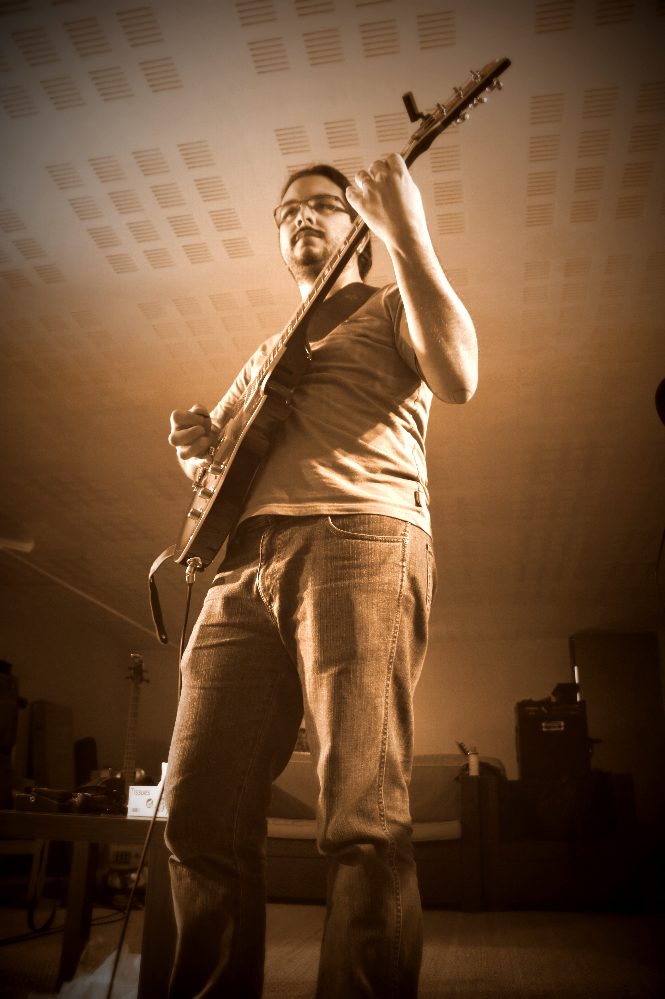
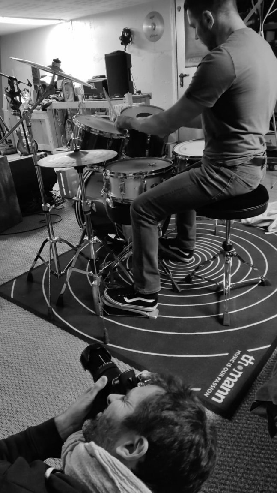
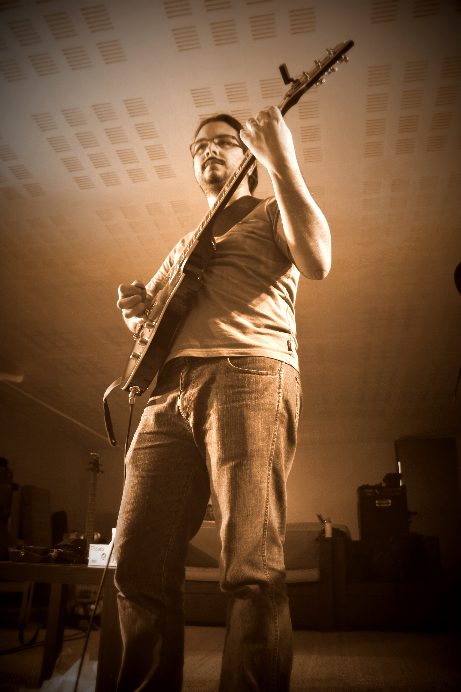
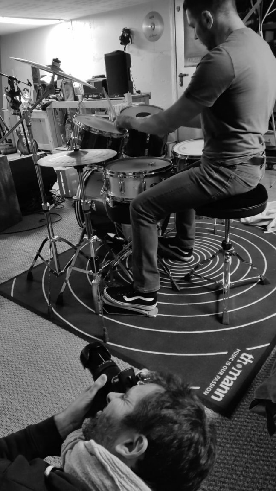

Fallout French Metal Band
Fallout
Bienvenue dans l'univers post-apocalyptique de Fallout, le groupe de post nuclear death metal originaire d'Aix-en-Provence ! Notre musique est inspirée par des groupes tels que Carcass, Samaël et Six Feet Under, et d'autres groupes de metal extrême, parfois teintée d’une dose de Ministry. Nous aimons expérimenter avec différents styles pour créer un son unique et brut qui, avec des titres comme « Dead Planet » ou « One Second Holocaust », transporte l'auditeur dans un monde post-apocalyptique qui laisse peu de place à l’espoir mais avec un second degré toujours présent et absolument assumé comme dans « Inside Trump » ou « A Prophet to Tell the Truth. » Nous sommes un groupe de musique passionné et dédié, formé en 2012 par quatre amis d’enfance. Florent et Morgan à la guitare, David à la basse et Aurélien au chant. À l'époque, nous n'avions pas de batteur, mais en 2014, Gaëtan a rejoint le groupe pour donner une nouvelle dimension à notre son. Puis Gaëtan a stoppé son voyage musical et quitté le groupe en 2020. Nous n'avons cessé d'écrire de la musique et nous produire en concert à l'occasion. Depuis, nous travaillons sur un nouvel EP de 5 titres à la boite à rythme comme à nos débuts.
Début 2023, Julien nous a rejoint à la batterie pour que le groupe soit à nouveau au complet et enflamme de nouvelles scènes. Notre scénographie est soigneusement travaillée pour créer une expérience visuelle et sonore immersive pour notre public. Nous sommes fiers de notre premier EP intitulé Post Nuclear Gods, qui comprend 7 titres enregistrés à l'été 2016 au THD Studio - pochette dessinée par Augustin. Nous jouons pour la scène et pour partager des expériences fortes avec notre public, qu'il y ait 5 ou 150 personnes dans la salle. Nous sommes impatients de vous entraîner dans notre univers post-apocalyptique lors de nos prochains concerts.
 


